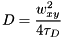
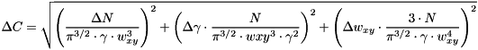
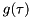
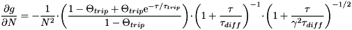
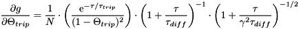
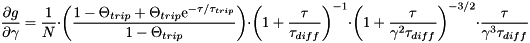

![\[ G(\tau)=G_\infty+\frac{1}{N}\cdot\left(\frac{1-\Theta_{trip}+\Theta_{trip}\mathrm{e}^{-\tau/\tau_{trip}}}{1-\Theta_{trip}}\right)\cdot\left(1+\frac{\tau}{\tau_{diff}}\right)^{-1}\cdot\left(1+\frac{\tau}{\gamma^2\tau_{diff}}\right)^{-1/2} \]](form_29.png)
This class implements a 3D diffusion model for the fitting routines in QuickFit3. This model has one diffusing and one non-fluorescent species, plus it implements analytical derivatives. The model may be denoted as:
The parameters are:
 : overall particle number (including currently dark particles, e.g. in triplet state)
: overall particle number (including currently dark particles, e.g. in triplet state) : fraction of the particles in the triplet state
: fraction of the particles in the triplet state : aspect ratio of the gaussian used to approximate the focus
: aspect ratio of the gaussian used to approximate the focus : longitudinal half axis of the focus gaussian
: longitudinal half axis of the focus gaussianThis model also calculates the diffusion coefficient, if the width of the laser focus (xy plane) is known, as:

where  is the diffusion time. Also the effective focal volume
is the diffusion time. Also the effective focal volume  is calculated:
is calculated:
![\[ V_{eff}=\pi^{3/2}\cdot\gamma\cdot w_{xy}^3 \]](form_14.png)
Given this focal volume, the plugin may also calculate the particle concentration in the sample:
![\[ C=\frac{N}{V_{eff}} \]](form_15.png)
The plugin also calculates some parameter errors:
![\[ \Delta \left(\frac{1}{N}\right)=\left|\frac{\Delta N}{N^2}\right| \]](form_16.png)
![\[ \Delta D=\sqrt{\left(\Delta w_{xy}\cdot\frac{w_{xy}}{2\tau_D}\right)^2+\left(\Delta \tau_D\cdot\frac{w_{xy}^2}{4\tau_D^2}\right)^2} \]](form_23.png)
![\[ \Delta V_{eff}=\sqrt{\left(\Delta\gamma\cdot\pi^{3/2}\cdot w_{xy}^3\right)^2+\left(\Delta w_{xy}\cdot 3\pi^{3/2}\cdot \gamma\cdot w_{xy}^2\right)^2} \]](form_17.png)

The analytical derivatives of  are:


![\[ \frac{\partial g}{\partial \tau_{trip}}= -\frac{1}{N}\cdot\left(\frac{\Theta_{trip}\cdot \tau\cdot \mathrm{e}^{-\tau/\tau_{trip}}}{(1-\Theta_{trip})\cdot \tau_{trip}^2}\right)\cdot\left(1+\frac{\tau}{\tau_{diff}}\right)^{-1}\cdot\left(1+\frac{\tau}{\gamma^2\tau_{diff}}\right)^{-1/2} \]](form_36.png)
![\[ \frac{\partial g}{\partial \tau_{diff}}= \frac{1}{N}\cdot\left(\frac{1-\Theta_{trip}+\Theta_{trip}\mathrm{e}^{-\tau/\tau_{trip}}}{1-\Theta_{trip}}\right)\cdot \left\{\frac{\tau}{\tau_{diff}^2}\left(1+\frac{\tau}{\tau_{diff}}\right)^{-2}\cdot\left(1+\frac{\tau}{\gamma^2\tau_{diff}}\right)^{-1/2} + \frac{\tau}{2\gamma^2\tau_{diff}^2}\cdot\left(1+\frac{\tau}{\tau_{diff}}\right)^{-1}\cdot\left(1+\frac{\tau}{\gamma^2\tau_{diff}}\right)^{-3/2}\right\} \]](form_37.png)

![\[ \frac{\partial g}{\partial G_\infty}= 1 \]](form_39.png)